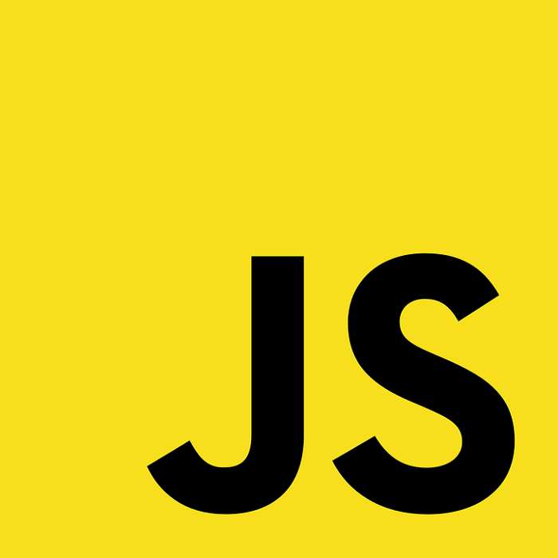
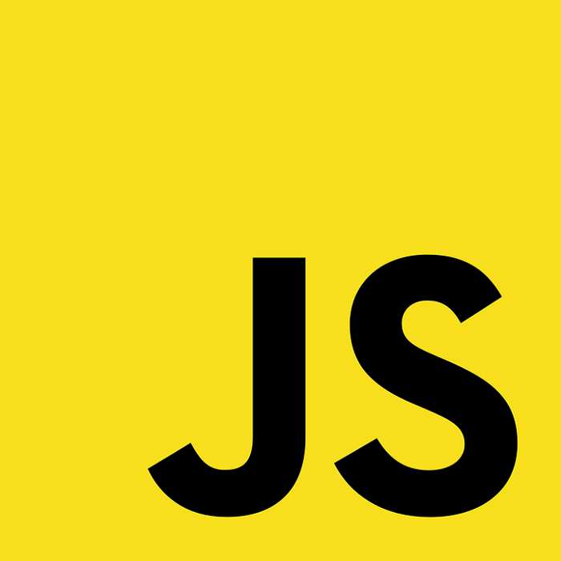

За сайта
Сайтът е създаден от Кристиян Иванов по задача, дадена от Враца Софтуер Общество.
Засяга се най-вече темата за технологиите от 20 век, които са ми любими.
За разработката бяха използвани HTML 5, JavaScript и CSS 3 (с помощта на Materialize). Хостинг от Heroku. Контрол на версиите - GitHub.

 
